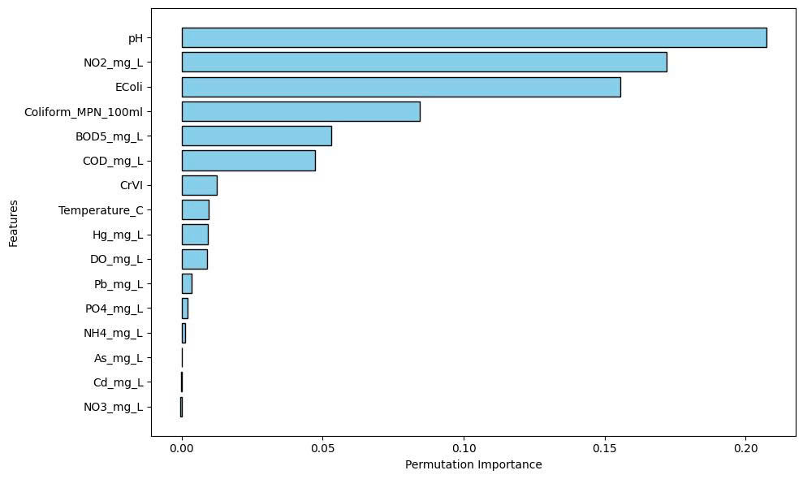

Machine Learning-based Water Quality Index Prediction
- Water Quality Index (WQI) is essential for assessing aquatic health and human safety.
- This study aims to predict WQI in Quang Ninh province using machine learning while reducing measurement costs.
- Five algorithms were compared, a stacking model was built, and feature selection was applied before retraining.
- The stacking model achieved high accuracy and feature selection reduced inputs without compromising performance.
Abstract
- Dataset construction
- Compare the performance between algorithms
- Make a stacking model that better than the others
- Make a new way to choose feature importance
Introduction
traditional WQI calculation: time-consuming and expensive
Make an AI model that less time consuming and expensive but performance better
Aim:
Literature Review
-
Challenges of traditional WQI
- Extreme values can be masked (eclipsing effect).
-
Data-driven approaches
- ML/AI capture hidden nonlinear relationships without mechanistic rules.
- ANN handles multidimensional data but risks overfitting.
- RF and XGBoost are accurate and robust to noise.
- LSTM and GRU capture long-term trends in time-series data.
-
Feature optimization & cost reduction
- Frequently select features importance based on permutation importance analysis.
- Fewer parameters reduce cost and enable IoT-based monitoring.
Methodology

I selected Random Forest, Gradient Boosting, and Support Vector Regression as base models for the stacking ensemble due to their superior performance compared to other algorithms.

Feature selection was guided by both variable correlation and practical measurement considerations. Specifically, the E. coli feature was removed because it is highly correlated with the Coliform feature, which already contains the relevant information. Additionally, BOD was excluded in favor of COD due to the significantly longer measurement time required for BOD (five days), making COD a more practical choice for real-time or frequent water quality assessment, even though BOD and Coliform scored highly in the Permutation Importance analysis.
Results
Model with dataset before removing unnecessary features
| Model | MSE | RMSE | MAE | R² |
|---|---|---|---|---|
| Random Forest | 4.9774 | 2.2310 | 1.0569 | 0.9576 |
| Gradient Boosting | 4.0445 | 2.0111 | 0.9118 | 0.9655 |
| Linear Regression | 27.0571 | 5.2016 | 3.5061 | 0.7693 |
| K-Nearest Neighbors | 14.3403 | 3.7869 | 2.1515 | 0.8777 |
| Support Vector Regression | 10.3148 | 3.2117 | 1.7506 | 0.9120 |
| Stacking Model | 3.9389 | 1.9847 | 0.8853 | 0.9664 |
Model with dataset after removing unnecessary features
| Model | MSE | RMSE | MAE | R² |
|---|---|---|---|---|
| Stacking Model | 6.0215 | 2.4538 | 1.2690 | 0.9486 |
| Traditional WQI calculation | 238.0708 | 15.4295 | 15.0481 | -0.8552 |
Discussion and Conclusion
WQI dataset often contain too many false positive noise records
Select feature importance by permutation importance might remove important knowledge make model hard to predict Minority case
Algorithms based tree performance better than others as they effectively handle false positive noise records
Future Work
Applying Lifelong Learning
Compare more different algorithms and datasets
Collect more records and apply deep learning
Applying IoT technologies for real-time data collection